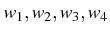
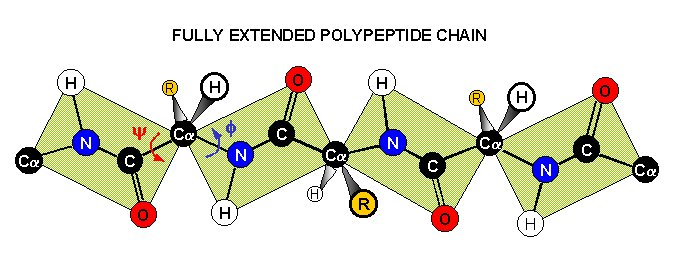
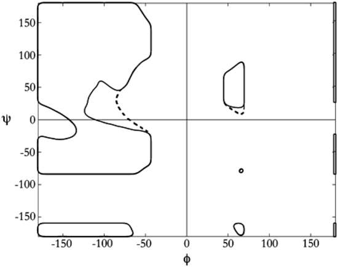
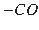
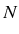

La estructura secundaria es una propiedad de las proteínas naturales en solución, que se explica por medio de una red (dinámica) de puentes de hidrógeno que conectan diferentes partes del polipéptido a escala más o menos local, formando hélices y láminas que quedan conectadas por lazos ( loops ) y regiones desordenadas, como ya recordamos en la sección 1.3.2 (y en este otro curso).
Cuando forman parte de un elemento de estructura secundaria, los aminoácidos adoptan conformaciones características, que se pueden resumir en forma de diagramas de Ramachandran (Ramachandran & Sasisekharan, 1968), que muestran la distribución de valores y  observados a la largo del esqueleto de una proteína:
|

|
|

|
Si disponemos de las coordenadas atómicas de una proteína podemos medir sus ángulos diedros para generar nuestros propios diagramas de Ramachandran, como hace esta herramienta web, con dos fines:
El procedimiento, dado unas coordenadas en formato PDB (1LFU),
es relativamente sencillo, recurriendo a programas como DANGLE
o haciendo un poco de álgebra y trigonometría:
#!/usr/bin/perl -w
# prog2.2 calcula los angulos diedros de una proteina en formato PDB
# Bruno Contreras-Moreira, adaptado de http://praveenvijay.netfirms.com/scripts.htm#backbone
use strict;
use Math::Trig;
my ($PDBfile,@coordenadas,@atomo,@residuo,@cadena,@res_id,@x,@y,@z);
my ($total,$j,$i) = (0,1);
if(!$ARGV[0]){ die "# usage: $0 <PDB file>\n"; }
else{ $PDBfile = $ARGV[0] }
## 1) lee coordenadas atomicas en formato PDB
open(PDB,$PDBfile)|| die "# $0 : no puedo leer $PDBfile\n";
while(<PDB>)
{
last if(/^ENDMDL/); # para estructuras NMR como 1lfu, TER es otra opcion
next if not(/^ATOM/);
push(@coordenadas,$_);
}
close(PDB);
## 2) recorre secuencia buscando atomos N,CA,C consecutivos
for $i (0..$#coordenadas-2)
{
#ATOM 2231 N ALA P 78 -14.689 7.253 -23.476
$residuo[$j] = substr($coordenadas[$i],17,3);
$cadena[$j] = substr($coordenadas[$i],21,1);
$res_id[$j] = substr($coordenadas[$i],23,3);
$atomo[$j] = substr($coordenadas[$i],12,4);
$atomo[$j+1] = substr($coordenadas[$i+1],12,4);
$atomo[$j+2] = substr($coordenadas[$i+2],12,4);
if($atomo[$j] eq ' N ' && $atomo[$j+1] eq ' CA ' && $atomo[$j+2] eq ' C ')
{
$x[$j]{'N'} = substr($coordenadas[$i],30,8);
$y[$j]{'N'} = substr($coordenadas[$i],38,8);
$z[$j]{'N'} = substr($coordenadas[$i],46,8);
$x[$j]{'CA'} = substr($coordenadas[$i+1],30,8);
$y[$j]{'CA'} = substr($coordenadas[$i+1],38,8);
$z[$j]{'CA'} = substr($coordenadas[$i+1],46,8);
$x[$j]{'C'} = substr($coordenadas[$i+2],30,8);
$y[$j]{'C'} = substr($coordenadas[$i+2],38,8);
$z[$j]{'C'} = substr($coordenadas[$i+2],46,8);
$j++;
$total++;
}
}
print "# $0 : fichero PDB: $PDBfile ($total residuos)\n\n";
## 3) calcula e imprime angulos diedros
print "# residuo phi psi omega\n";
for $j (2..$total-1)
{
my ($x1,$y1,$z1,$x2,$y2,$z2,$x3,$y3,$z3,$x4,$y4,$z4,$x5,$y5,$z5,$x6,$y6,$z6); # puntos
my (@v1,@v2,@v3,@v4,@v5,@v6,@v7,@v8); # vectores directores
my ($phi,$psi,$omega) = (-9999,-9999,-9999); # valores nulos por defecto
# toma atomos en residuos j-1,j y j+1 para definir planos y calcular angulos diedros
($x1,$y1,$z1) = ( $x[$j-1]{'C'} , $y[$j-1]{'C'} , $z[$j-1]{'C'} );
($x2,$y2,$z2) = ( $x[$j]{'N'} , $y[$j]{'N'} , $z[$j]{'N'} ); # Cj-1 - Nj
($x3,$y3,$z3) = ( $x[$j]{'CA'} , $y[$j]{'CA'} , $z[$j]{'CA'} ); # \
($x4,$y4,$z4) = ( $x[$j]{'C'} , $y[$j]{'C'} , $z[$j]{'C'} ); # CAj - Cj
($x5,$y5,$z5) = ( $x[$j+1]{'N'} , $y[$j+1]{'N'} , $z[$j+1]{'N'} ); # \
($x6,$y6,$z6) = ( $x[$j+1]{'CA'}, $y[$j+1]{'CA'}, $z[$j+1]{'CA'} );# Nj+1 - CAj+1
@v1 = ( $x2-$x1 , $y2-$y1 , $z2-$z1 ); # plano definido por Cj-1, Nj and CAj (para medir phi)
@v2 = ( $x3-$x1 , $y3-$y1 , $z3-$z1 );
@v3 = ( $x3-$x2 , $y3-$y2 , $z3-$z2 ); # plano Nj, CAj and Cj (para medir phi y psi)
@v4 = ( $x4-$x2 , $y4-$y2 , $z4-$z2 );
@v5 = ( $x4-$x3 , $y4-$y3 , $z4-$z3 ); # plano CAj, Cj and Nj+1 (para medir psi)
@v6 = ( $x5-$x3 , $y5-$y3 , $z5-$z3 );
@v7 = ( $x5-$x4 , $y5-$y4 , $z5-$z4 ); # plano Cj, Nj+1 and CAj+1 (para medir psi y omega)
@v8 = ( $x6-$x4 , $y6-$y4 , $z6-$z4 );
$phi = angulo_diedro( @v1, @v2, @v3, @v4, $x3, $y3, $z3, $x2, $y2, $z2 ); # entre Nj y CAj (2Cs)
$psi = angulo_diedro( @v3, @v4, @v5, @v6, $x4, $y4, $z4, $x3, $y3, $z3 ); # entre CAj y Cj (2Ns)
$omega = angulo_diedro( @v5, @v6, @v7, @v8, $x5, $y5, $z5, $x4, $y4, $z4 );# entre Nj+1 y Cj (2CAs)
printf("%4d %3s %s %8.1f %8.1f %8.1f\n",$res_id[$j],$residuo[$j],$cadena[$j],$phi,$psi,$omega);
}
print "# residuo phi psi omega\n";
sub angulo_diedro
{
my (@p) = @_; #parametros ( v_plano1,v_plano2, v_plano3, v_plano4, enlace1, enlace2 )
my (@v1,@v2,$modulo1,$modulo2,$prod_escalar,@normal,$cos,$ang,$signo);
## 1) determina el angulo entre ambos planos
# calcula vector perpendicular a cada plano por producto vectorial
@v1 = ( ($p[1]*$p[5])-($p[2]*$p[4]) , ($p[2]*$p[3])-($p[0]*$p[5]) , ($p[0]*$p[4])-($p[3]*$p[1]) );
@v2 = ( ($p[7]*$p[11])-($p[8]*$p[10]) , ($p[8]*$p[9])-($p[6]*$p[11]) , ($p[6]*$p[10])-($p[9]*$p[7]) );
# calcula producto escalar de vectores perpendiculares para estimar cos(angulo)
$prod_escalar = ($v1[0]*$v2[0]+$v1[1]*$v2[1]+$v1[2]*$v2[2]);
$modulo1 = ((($v1[0]*$v1[0])+($v1[1]*$v1[1])+($v1[2]*$v1[2]))**0.5);
$modulo2 = ((($v2[0]*$v2[0])+($v2[1]*$v2[1])+($v2[2]*$v2[2]))**0.5);
$cos = ($prod_escalar/($modulo1*$modulo2));
$ang = (Math::Trig::acos($cos))/(Math::Trig::pi/180);
## 2) determina el signo del angulo diedro
# calcula vector normal a ambos vectores perpendiculares por producto vectorial
@normal = ( ($v1[1]*$v2[2])-($v1[2]*$v2[1]) , ($v1[2]*$v2[0])-($v1[0]*$v2[2]) , ($v1[0]*$v2[1])-($v1[1]*$v2[0]) );
# calcula producto escalar de vector normal y vector del enlace donde se da el angulo
$signo = ((($p[12]-$p[15])*($normal[0]))+(($p[13]-$p[16])*($normal[1]))+(($p[14]-$p[17])*($normal[2])));
if($signo < 0){ $ang=-$ang } # agudo si es positivo
return $ang;
}
Otras definiciones de estructura secundaria se basan en encontrar patrones de puentes de
hidrógeno entre grupos  y  del esqueleto peptídico,
como por ejemplo hace el software DSSP
(Kabsch & Sander, 1983)
de acuerdo con esta definición energética, donde un puente válido debe tener E<-0.5 kcal/mol,
q1=0.42e y q2=0.20e y  es una distancia interatómica en Angstroms:
es una distancia interatómica en Angstroms:
El software STRIDE (Frishman & Argos, 1995) es otro programa para este fin que en experimentos de validación mejora las asignaciones de estructura secundaria de DSSP.
Sin embargo, frecuentemente el problema es todavía más complicado:
Si definimos un alfabeto simplificado de tres letras para describir la estructura secundaria (H=hélice alfa, E=lámina beta y C=coil), hay algoritmos basados en redes neuronales que predicen con una precisión en torno al 75% el estado de estructura secundaria a nivel de residuo. Es evidente que se pierde información con este alfabeto, pero la estructura inferida puede tener muchas aplicaciones a la hora de diseñar experimentos y algoritmos que trabajen sobre la estructura terciaria.
Hay una buena exposición de este tema en el artículo de Jones (1999), donde se presenta el algoritmo PSIPRED y se evalúa la precisión de las asignaciones de estructura secundaria de varias maneras, incluyendo la función:
 |
(4.2) |
PSIPRED es aceptado como uno de los mejores predictores, pero hay muchos otros algoritmos de predicción de estructura secundaria y la mejor manera de compararlos es por medio de evaluaciones automáticas a ciegas. Desgraciadamente iniciativas de este tipo, como LiveBench o EVA, que recolectan datos de distintos algoritmos a medida que crece el PDB, son financiadas por poco tiempo y mueren.
Tras la aparición de los primeros predictores de estructura secundaria empezó a ser evidente que muchas proteínas, sobre todo de vertebrados, no tenían aparentemente una estructura ordenada, al menos en ciertos estados fisiológicos (ver por ejemplo el repositorio Disprot (Sickmeier et al., 2007)). Hoy sabemos que muchas proteínas en general ordenadas pueden contener segmentos desordenados (Lobanov et al., 2010). Como resultado se diseñaron predictores para un cuarto estado, el de desorden intrínseco, y se han creado recursos para la anotación de estas secuencias como D2P2.
En el caso de PSIPRED, la evolución es un software de nombre DISOPRED (Ward et al., 2004), que además de reconocer elementos de estructura secundaria, estima una probabilidad empírica de que cada aminoácido esté desordenado, sin pertenecer a ninguna clase de estructura secundaria. Otros predictores recientes que combinan estructura secundaria y otras propiedades son s2D o SPIDER2, con una precisión por encima del 80% (Sormanni et al., 2014; Heffernan et al., 2015), o SSpro, rayando el %90 en las validaciones de sus autores (Magnan & Baldi, 2014).
El ejercicio de esta sección consiste en calcular la estructura secundaria de una proteína del Protein Data Bank de 3 maneras distintas, con el fin de compararlas:
/home/compu2/algoritmos3D/soft)
![$\displaystyle E = q_{1} q_{2} \left[ \frac{1}{r_{ON}} + \frac{1}{r_{CH}} - \frac{1}{r_{OH}} - \frac{1}{r_{CN}} \right] \cdot 332 \mathrm{kcal/mol}$](img49.png)